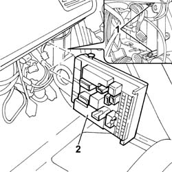
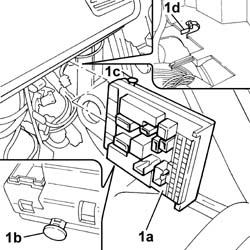

5505A32 BODY COMPUTER - R R
- Path
- Procedures > 55 ELECTRICAL EQUIPMENT > 5505 INSTRUMENT/GAUGE ELECTRICAL CIRCUITS > 5505A MULTI-FUNCTION COMPONENTS > 5505A32 BODY COMPUTER - R R
- Kind
- repair procedure (removal / refitting; the operation number is the code)
- Applies to
- all engines; all production periods
- Interactive page
- https://sloeber94.github.io/elrnDB-fUlss/en/#/179007523
Applies to: all engines; all production periods
 Removing
Removing
 Refitting
RefittingOp. 5530B56 BATTERY DRIP TRAY COVER - R.R.
- Disconnect the negative battery terminal.
Op. 7040H29 FRONT PILLAR LOWER COVER (ONE), LEFT OR RIGHT - R.R.
Op. 7040A44 SEAT INTERIOR GUARD - R R
Op. 7040G22 FACIA COMPARTMENT LIGHT SWITCH/BULB HOLDER - R+R
Op. 7040A31 FLAP ASSEMBLY - R R
- Disconnect the electrical connections.
1. Open the retaining clips.
2. Release the Body Computer and remove it.

Applies to: all engines; all production periods
Refitting
Removing1. Place the Body Computer (1a) in position ensuring that the pins (1b) and (1c) are aligned with the guides (1d).

Applies to: all engines; all production periods
- Check that the fastening clips are secured.
- Connect the electrical connections.
Op. 7040A31 FLAP ASSEMBLY - R R
Op. 7040A44 SEAT INTERIOR GUARD - R R
Op. 7040G22 FACIA COMPARTMENT LIGHT SWITCH/BULB HOLDER - R+R
Op. 7040H29 FRONT PILLAR LOWER COVER (ONE), LEFT OR RIGHT - R.R.
- Connect the negative battery terminal.
Topics linked from this page (6)
- 5010B68 AIR DUCT (ONE) LEFT OR RIGHT BETWEEN TIMING CASING CONNECTOR AND FAN FOR REAR SEATS - R.R.
- 5530B56 BATTERY DRIP TRAY COVER - R.R.
- 7040A31 FLAP ASSEMBLY - R R
- 7040A44 SEAT INTERIOR GUARD - R R
- 7040G22 FACIA COMPARTMENT LIGHT SWITCH/BULB HOLDER - R+R
- 7040H29 FRONT PILLAR LOWER COVER (ONE), LEFT OR RIGHT - R.R.